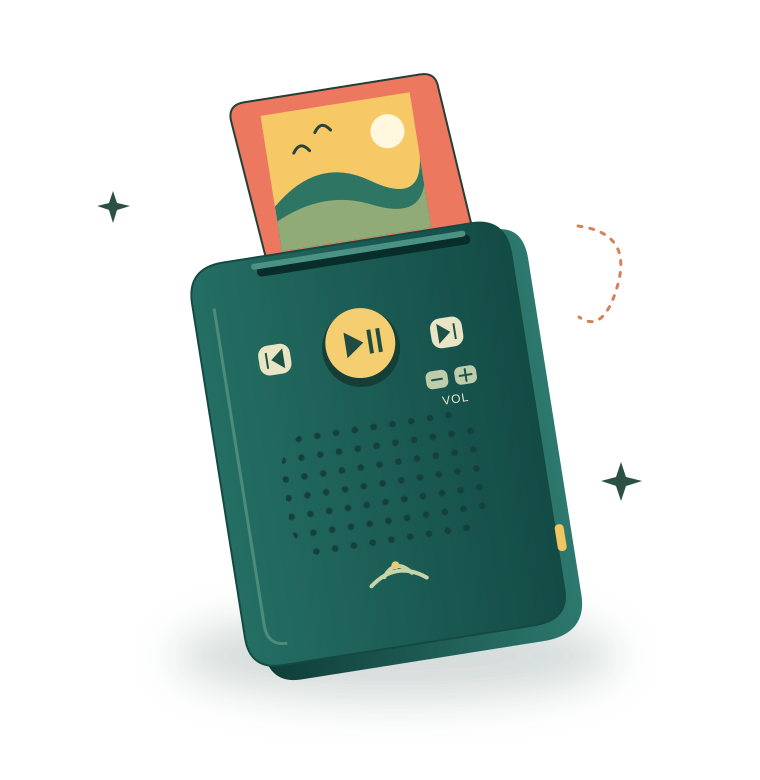

Je choisis mon ailleurs.
Une carte illustrée pour retrouver une histoire familière, ou en découvrir une nouvelle ensemble.
Petites oreilles. Grands ailleurs.
Une carte, une histoire, et tout un monde à inventer. Galia imagine une conteuse de poche et des récits préparés par les parents autour de ce qui passionne leurs enfants.
Première collection en accès libre · Projet matériel en développement

La toute première collection
Un mystère tout doux, une promenade pleine de sons, un petit voyage vers le soir. Choisissez une histoire, écoutez l’aperçu, puis laissez l’imagination faire son chemin.
Les histoires arrivent…
Collection originale en cours de création. Textes proposés pour les 4–7 ans, à découvrir d’abord avec un adulte. Relecture éditoriale et validation des voix finales à venir.
Il suffit d’un petit départ
Sur le chemin du retour, dans une cabane de coussins, au calme avant le dîner… Chaque histoire trouve son moment.
Une carte illustrée pour retrouver une histoire familière, ou en découvrir une nouvelle ensemble.
On écoute, on fait pause, on reprend. Ici, rien ne presse : les images se fabriquent dans la tête.
Chercher un son, inventer un nuage, dessiner un abri… Une idée toute simple pour continuer sans écran.
Deux petits compagnons en préparation
La Galia Mini privilégie le geste : glisser une carte, retrouver son histoire. Galia Explore ajoute un petit écran pour naviguer. Deux projets ouverts, une même place pour l’écoute.
Une carte à glisser. Une histoire à retrouver.
65 × 95 × 24 mm · boîtier seul
Une petite fenêtre sur sa bibliothèque audio.
67 × 95 × 24 mm · boîtier seul
Sur Galia Mini, un grand bouton central pour lire ou faire pause. De part et d’autre, les pistes précédente et suivante. Deux petits boutons en dessous pour le volume : des gestes distincts, des symboles et des formes à reconnaître, même sans se fier aux couleurs.
Quatre directions pour parcourir la bibliothèque, un grand bouton A pour lire ou valider, un plus petit bouton B pour revenir, et deux boutons de volume séparés. La disposition accompagne le petit écran ; elle est différente de celle de Galia Mini.
Implantation et repères tactiles proposés ; confort, erreurs d’appui et usage par les enfants à vérifier sur prototype.
Dans les coulisses du projet
Vues des géométries CAO actuelles, avec volumes nominaux des composants. Les couleurs facilitent la lecture ; le montage et la sécurité restent à valider sur prototype.


Galia Mini
La carte porte seulement un identifiant. Les histoires restent dans la conteuse. Un adulte peut ouvrir les deux coques vissées, changer l’image en papier derrière sa protection transparente et associer la carte à un autre contenu approuvé.
CAO actuelle et outils parentaux locaux. Le logiciel de configuration Wi-Fi est réalisé pour les essais ; ajustement et fonctionnement sur appareil restent à valider sur prototype.
Découvrir la carte, couche par couche · Imprimer les images à glisser
Côté parents
Un dinosaure, les étoiles, une question du jour… Notre ambition : vous aider à préparer des histoires et de petites découvertes à leur mesure, à partir de vos envies et des sources que vous avez le droit d’utiliser. Vous choisissez, vous relisez, vous écoutez avant eux.
Comprendre le projetLe prototype local permet d’importer des enregistrements et certains podcasts autorisés, de vérifier une version précise et d’attribuer les contenus à des cartes. La lecture sur le matériel reste à valider.
Histoires sur leurs passions, petites leçons, contenu préparé depuis vos propres sources : c’est la direction du projet. La création assistée et les connexions à vos abonnements sont à l’étude, pas disponibles sur cette vitrine.
Les trois histoires de cette page sont des démonstrations originales. Le texte et l’audio final demandent deux validations distinctes. Une carte choisit un récit stocké dans le lecteur ; elle ne donne aucun droit sur un abonnement.
Le parcours que nous préparons
Objectif de produit, pas un service de création actif. Aujourd’hui : des outils locaux d’import, de revue et d’export ; ici : trois récits de démonstration.
Un sujet qui intrigue votre enfant, une langue, un souvenir ou une source autorisée. Vous décidez ce qui entre dans sa bibliothèque.
Un brouillon ne vaut pas une approbation. Le parcours visé sépare la validation du texte de celle du fichier audio final, et redemande votre accord si la version change.
Une fois le contenu approuvé et transféré, la carte sélectionnera l’audio conservé dans le lecteur. L’objectif : écouter ensuite sans écran, à son rythme.
Les connexions aux fournisseurs, MCP et outils de synthèse vocale sont en cours d’évaluation. Aucun compte n’est connecté ici. Un abonnement n’accorde pas automatiquement un accès API, des crédits de voix ou le droit de copier un catalogue. Les possibilités et coûts seront vérifiés fournisseur par fournisseur, avec votre accord avant tout transfert de contenu.
Les petites questions
Pas encore. Cette vitrine présente un projet de conception et ses premiers contenus. La fabrication, le prix final et la conformité n’ont pas été validés.
Pour cet aperçu, le navigateur lance un enregistrement synthétique de démonstration, téléchargeable pour écouter plus tard. Le projet Galia Mini vise une écoute sans écran, avec des fichiers stockés dans l’appareil. Galia Explore possède un petit écran de navigation.
La future carte Galia Mini ne porte qu’un identifiant électronique. Elle sélectionne un audio déjà stocké dans le lecteur. Les cartes papier à imprimer ici sont des supports de jeu et ne déclenchent pas le prototype.
Oui, les trois textes originaux et leurs activités existent dans les deux langues. Utilisez FR / EN en haut de la page. Des enregistrements synthétiques de démonstration existent dans les deux langues ; la voix du navigateur sert de secours si un fichier manque.
Les sources de la collection et leur licence sont disponibles avec les téléchargements. Commencez par lire le texte ensemble et adaptez l’activité à votre enfant. Une carte choisit un récit ; aucun enregistrement de voix d’enfant n’est nécessaire.
On se retrouve ailleurs ?